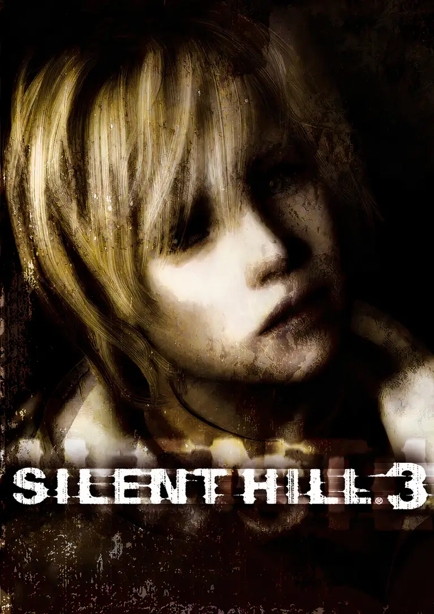

 |
|
| Tiempo de juego | No Jugado |
| Última actividad | Nunca |
| Añadido | 20/11/2025 15:28:09 |
| Modificado | 20/11/2025 15:33:11 |
| Estado de finalización | Not Played |
| Librería | Playnite |
| Fuente | |
| Plataforma | PC (Windows) |
| Fecha de lanzamiento | 23/5/2003 |
| Puntuación de la Comunidad | 83 |
| Puntuación de la Crítica | 88 |
| Puntuación de usuario | |
| Género | Adventure Puzzle |
| Desarrollador | Team Silent |
| Editor | Konami |
| Característica | Single Player |
| Enlaces | |
| Tag | |
Muchos jugamos a Silent Hill 2 y nos quedamos marcados por su historia de culpa y melancolía. Pero donde esa entrega era un terror psicológico y silencioso, Silent Hill 3 es un grito visceral y directo a la cara.
Olvidate de la búsqueda triste de James Sunderland. Acá sos Heather Mason.
Silent Hill 3 es una experiencia claustrofóbica y estética. Es el terror japonés en su estado más puro, ruidoso y sangriento. Si el 2 te rompió el corazón, este te va a acelerar el pulso hasta el límite.